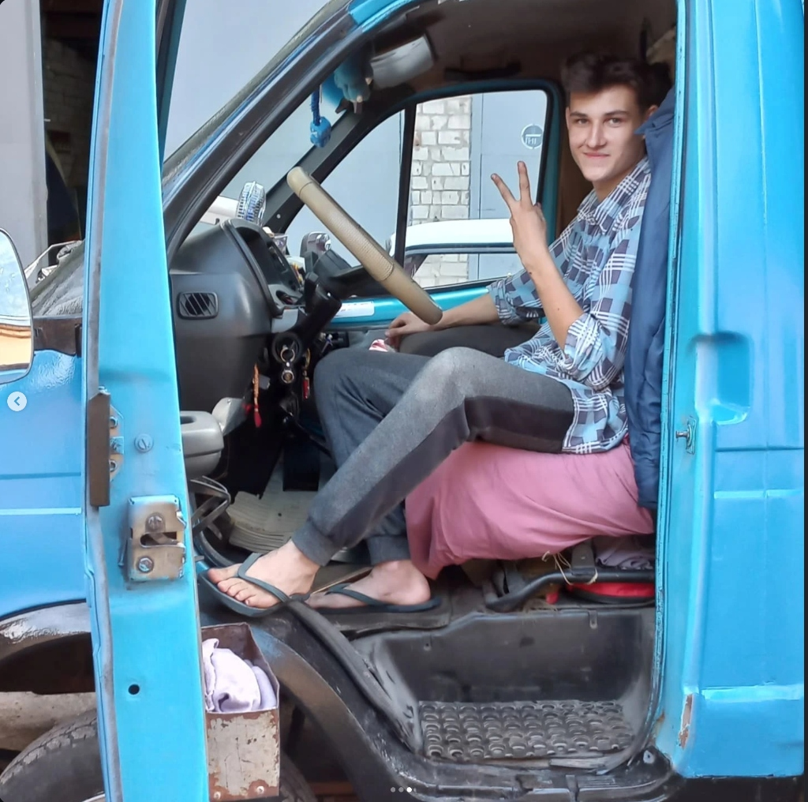
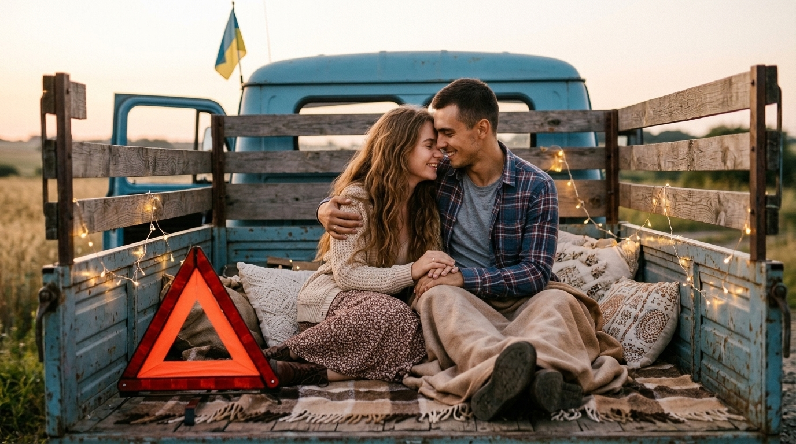
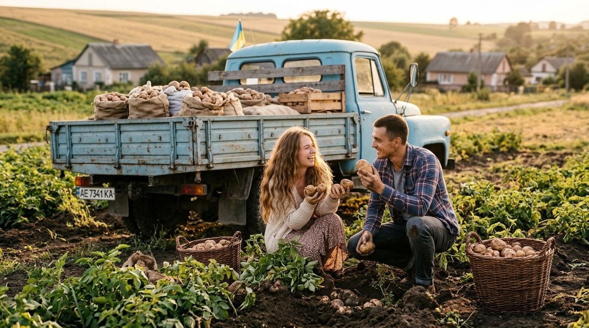
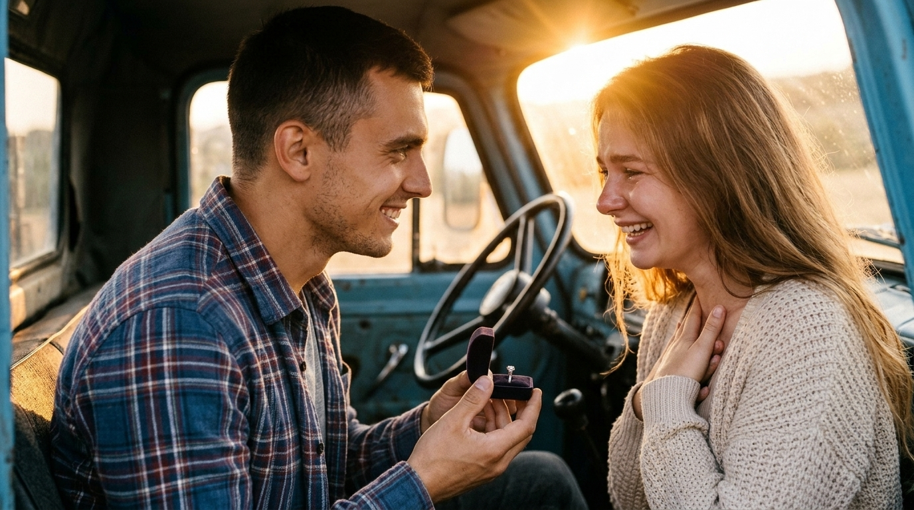
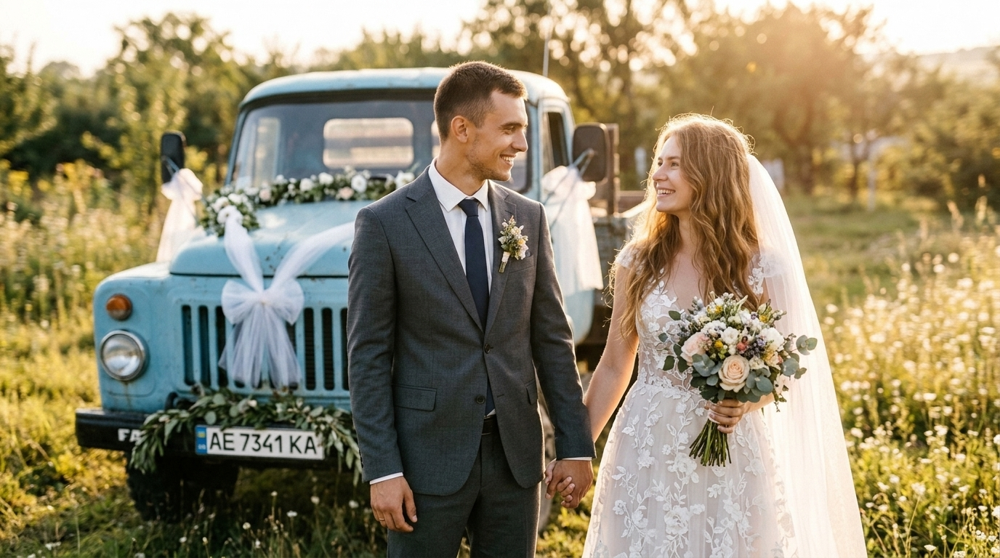
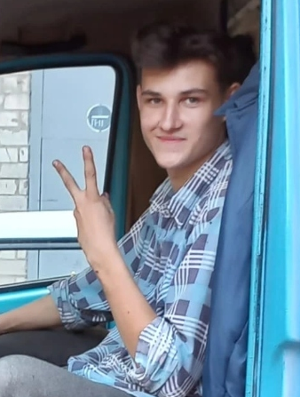
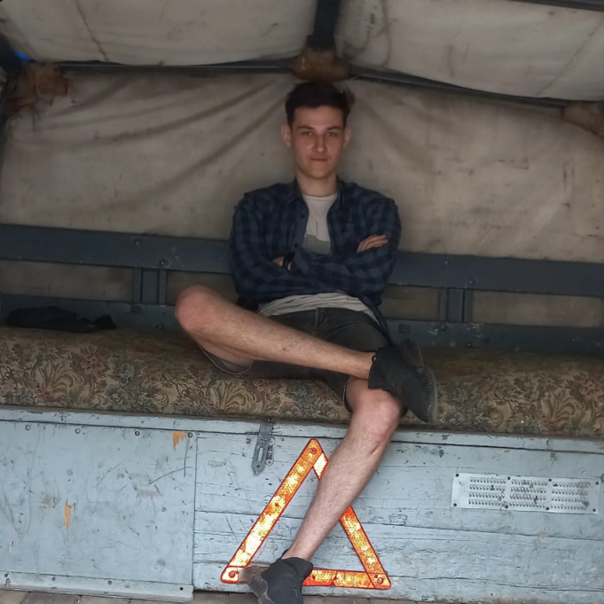

Швидкість, романтика, синя Газель і справжнє кохання...
Історія кохання, яка почалась із щирої посмішки у вікні синьої Газелі та стала найміцнішим союзом на всіх дорогах життя
Коли Сергій уперше натиснув на педаль газу своєї легендарної синьої Газелі, він і уявити не міг, що головним вантажем у його житті стане щастя Ані. Забудьте про нудні побачення при свічках — справжні почуття перевіряються трасою, запахом свіжого асфальту, щирим сміхом у кабіні та надійним чоловічим плечем у картатій сорочці.

Все почалося зі щирого погляду та фірмового жесту «Peace». Сергій під'їхав на своїй легендарній синій Газелі, посміхнувся Ані через відчинені дверцята і запропонував підвезти. З того моменту їхні шляхи злилися в одну щасливу дорогу.

Дерев’яні борти кузова, теплий плед, трикутник аварійної зупинки та ніжні обійми під вечірнім золотим небом. Сергій та Аня зрозуміли, що для справжнього щастя не потрібні дорогі ресторани — достатньо бути вдвох у рідній Газелі.

Сергій довів свої почуття ділом! Він підкотив Газель прямо до городу Ані, і разом вони весело завантажили повний кузов свіжої картоплі. Аня сміялася, Сергій дбайливо носив мішки — так будується справжнє міцне українське кохання.

Посеред дороги на заході сонця Сергій зупинив Газель і відкрив оксамитову коробочку з діамантовою обручкою. Сльози радості, щире «ТАК!» від Ані та гучний переможний звук клаксона на всю округу.

Святковий день кохання! Сергій в елегантному костюмі нареченого, Аня в розкішній білій весільній сукні з ніжним вельоном, а позаду — їхня вірна синя Газель, святково прикрашена білими стрічками та квітковими гірляндами.
Він завжди знає точний маршрут і ніколи не скидає обертів перед труднощами. Його впевненість у картатій сорочці та фірмові шльопки за кермом заряджають спокоєм, а почуття гумору розганяє будь-яку негоду. Для Ані Сергій — це надійна фортеця, яка може рухатись зі швидкістю 90 км/год.
Дівчина, яка знає ціну справжнім чоловічим вчинкам. Її ніжність і сяюча посмішка перетворюють будь-який складний рейс на сонячну подорож. Вона — головна пасажирка та муза Сергія, заради якої він готовий їхати хоч на край світу і назад.
Натисніть на фірмовий клаксон синьої Газелі, щоб розбудити сусідів та привітати Сергія і Аню!
«Справжнє кохання — це коли ти їдеш на Газелі зі швидкістю 90 км/год, але твоє серце мчить до неї набагато швидше.»
Поки Сергій та Аня насолоджуються швидкістю та картоплею, ви можете поглянути на альтернативну романтичну історію або її драматичний фінал.
Попереду тисячі кілометрів, вірність, щирий сміх та надійне плече Сергія.
Instagram-шаленство навколо Сергія
Коли Сергій виклав фото в кузові, Instagram буквально закипів. Друзі та шанувальники не стримували емоцій, але серце Серьоги б’ється лише для однієї королеви.


Чому саме Аня?
Поки Данило Костів та noyvash засипали коментарі Сергія компліментами небаченої пристрасті, Сергій залишався непохитним.
«Краса приваблює багатьох, але справжня любов сідає поруч на пасажирське сидіння і вмикає твою улюблену пісню», — каже Сергій.
Офіційний обранець Ані